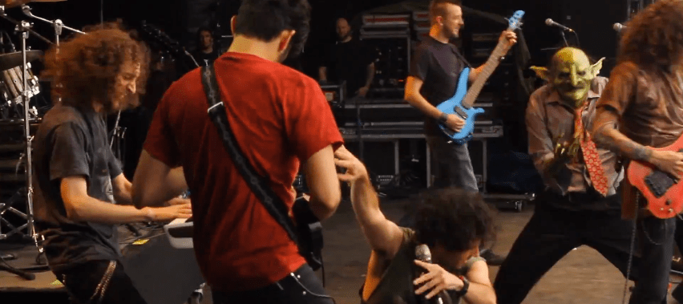

Nekrogoblikon is an American comedy metal band based in Los Angeles, California. The group was formed in 2006, by Tim Lyakhovetskiy and Nicky Calonne. The band has released four full-length albums, Goblin Island, Stench, Heavy Meta, and Welcome to Bonkers and one EP, Power. The band's music centers around goblins.
Nekrogoblikon was formed in 2006 by Nicky Calonne and Tim Lyakhovetskiy in Palo Alto, California. The two of them recorded Nekrogoblikon's first album, Goblin Island, in Lyakhovetskiy's basement. On his return to school at the University of California, Santa Barbara, Lyakhovetskiy found Ashleigh Carracino, Alex Duddy, Spencer Bartz, Alex Alereza, and Austin Nickel to form the rest of the band. The group played eleven shows before Bartz moved to Japan, and was replaced by Eddie Trager.